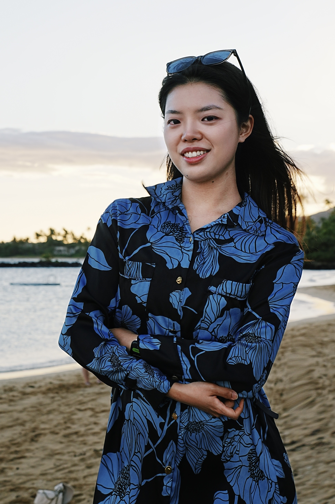
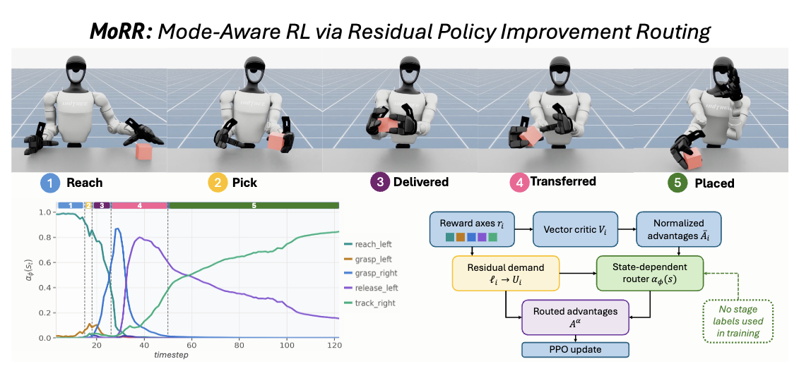
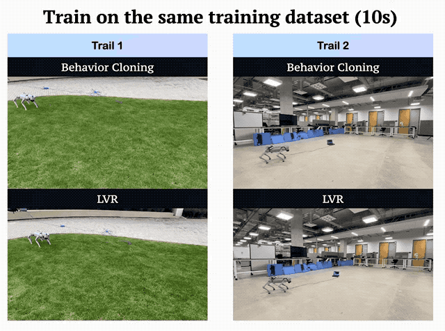
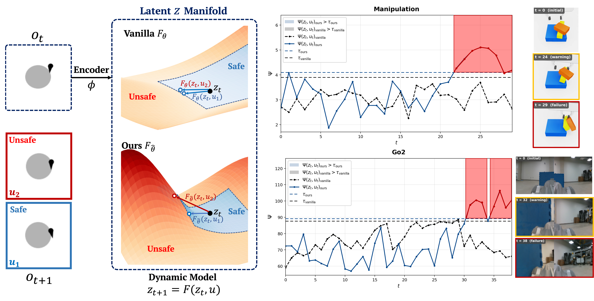
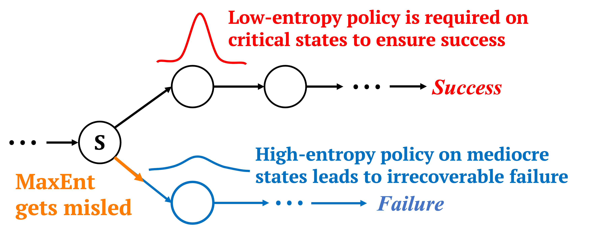
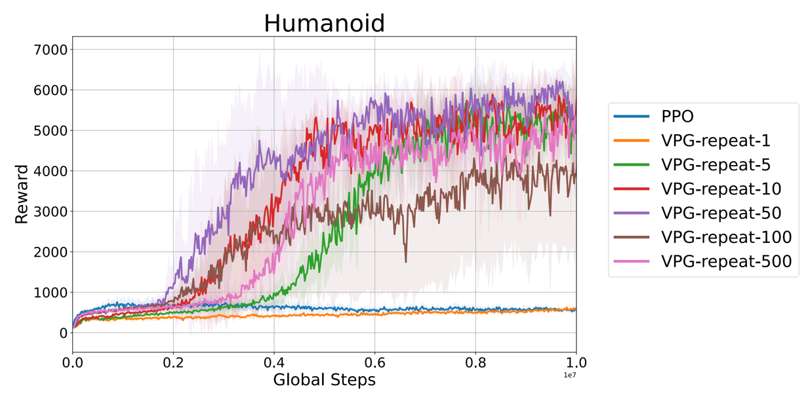
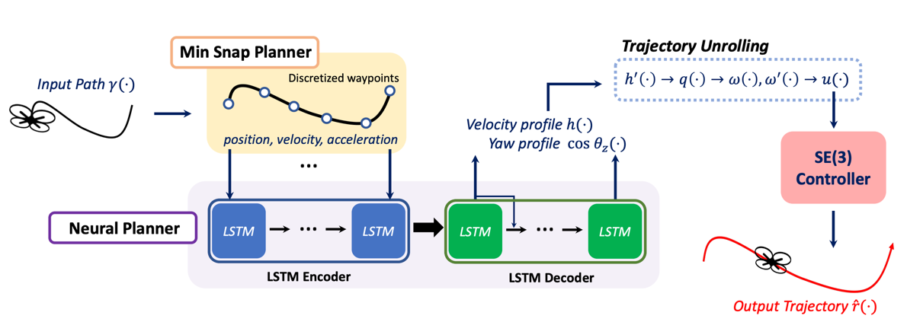
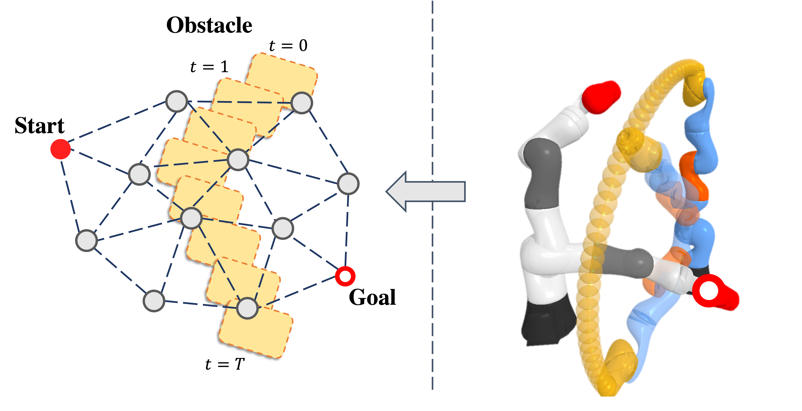

Hi! I am a Ph.D. student in Computer Science at UC San Diego, advised by Prof. Sicun Gao.
I am broadly interested in reinforcement learning and robotics. Specifically, my work focuses on making reinforcement learning more sample efficient and enabling robots to learn useful behaviors from limited demonstrations. I was also an Applied Scientist Intern at Amazon’s Industrial Robotics Group in summer 2026.







Reviewer: NeurIPS, ICML, ICLR, ICRA, IROS